ツルムラサキは強いですね。
2015/05/31
去年落ちた種が沢山育ってます。
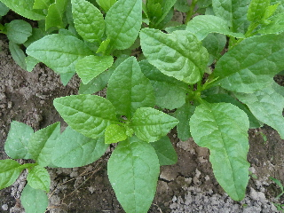
なんにもしなくても、勝手に大きくなっていいですね。
密集して生えているので、間引きを食べています。
2015/05/31
去年落ちた種が沢山育ってます。

なんにもしなくても、勝手に大きくなっていいですね。
密集して生えているので、間引きを食べています。
2015/05/31
ローズマリーって活用方法がよく分からないです。
いい香りなので、お茶にしたり肉料理に使えばいいんですけど、実際に使ったことはありません。
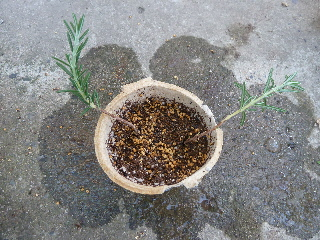
でもせっかく庭にあるんだから活用しよう！って思い、枝をチョキチョキ切り取って洗って乾燥させました。
切ってる時に短いものが出たので、挿し木にしました。
2015/05/31
ラベンダーが綺麗に咲いていたので、増やしたいって思いました。
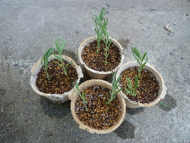
うまくいくかな？
今が花の時期なので、花が終わってから挿した方が良かったかな？
2015/05/31
ネットでジンチョウゲの育て方を調べると、
突然枯れるので挿し木で予備を育てましょうってあったので、挿し木をしました。
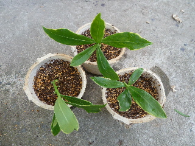
失敗したらまた挑戦します。
2015/05/31
たぶんもうカモミールは摘み取った方がいいですよね。
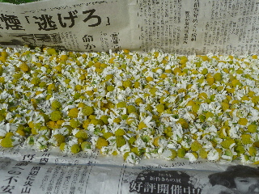
もうすぐ梅雨です。
乾燥を考えると5月中に収穫した方がよさそうなので、一気に収穫しました。
量が多いので、うまく乾燥出来るかな？
もっと早くから大目に収穫すれば良かったです。
2015/03/23
ラベンダー綺麗ですね。
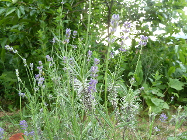
もっと量を増やしたいです。
もうちょっとしたら挿し木して増やそうと思います。
2015/05/23
カモミールを1週間乾燥させたら、カラカラになりました。
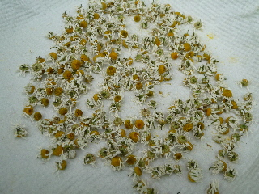
これでカモミールティーが飲めますね。
乾燥させただけですけど、なんか香りが強くなった気がする。
2015/05/17
これはテントウムシの幼虫？
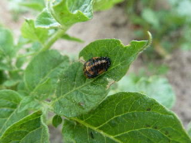
サナギなのかな？
アブラムシを沢山食べて欲しいです。
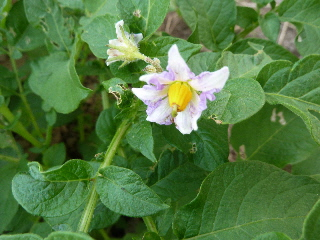
ジャガイモは花が咲いてました。
2015/05/17
綺麗に花が咲いているんですが、収獲します。
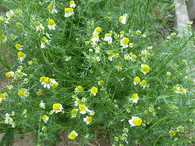
終わりかけの花をひとつひとつ摘み取るので、時間がかかりました。
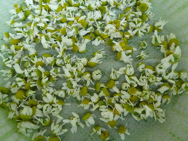
摘み取った花は水洗いして乾燥させます。
美味しく出来るといいですね。
2015/05/05
去年落ちたムカゴが、あちこちで芽を出しています。
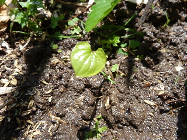
畑のスミッコに棒を立てて、植えてみました。
1年でどんだけ大きくなるでしょうね？
ムカゴが秋に採れるかな。
2015/05/05
ジャガイモに害虫が沢山ついていました。
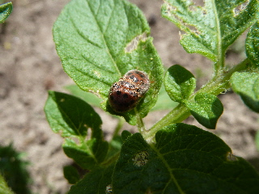
葉っぱを手べてるので取り除きました。
この虫って逃げないんですかね？手で簡単に捕まりました。
触っても、飛んで逃げたりしないんですね。
過去の日記
畑仕事じゃないよ。